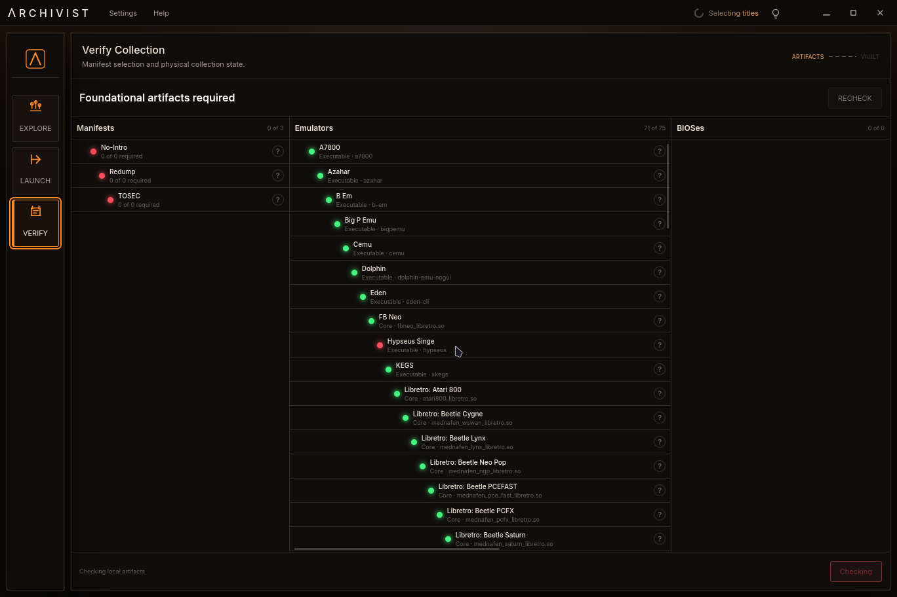

Emulator frontend + one-game-one-release curator + game-image manager = finally!
Video game history,
made playable.
Archivist turns your collection of game images into a curated history of the medium.
It picks the best releases, traces the connections between games and platforms, and gives you one place to explore and play.
Early-access signups aren’t open yet
(and this button doesn’t do anything—yet!)
(and this button doesn’t do anything—yet!)
- 82distinct emulators across 1,800+ mappings from historical systems to launch configurationsRead Ready to Launch →
- 1,477rules select the best version of each gameWhy we’re reviving Retool →
- 222,242files and folders applied to the live interface in 0.42 secondsRead the tech deep dive →


In developmentGamepad interface
Browse the catalogue and launch games without leaving the controller.
503 manifests accepted by all three tools · release builds2,151,769 rows · 1.31 s
Archivist’s purpose-built resident digest compiler processed the shared corpus in 1.31 seconds. Igir produced its report in 125.76 seconds, while OxyROMon imported relational records in 200.34 seconds; the performance article defines those different outputs before comparing them.
01 / 06
A curated history.
View games in context through genre family trees and platform timelines spanning the 1950s to today.